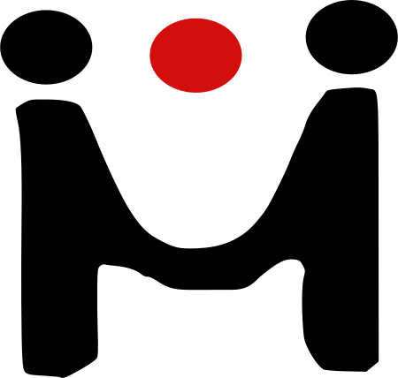

Mediation in Gesprächen

Fahrplan - Was haben wir vor?
- Motivation
- Was ist Mediation?
- Warum Mediation einsetzen?
- Wie geht das?
- Was zum mitnehmen: Tipps für später...
Motivation
- Wo Menschen miteinander Kommunizieren entstehen Konflikte
- Konflikte bedeuten Einbuße in Produktivität und Qualität
- Im Sinne des QM muss ein guter Umgang mit
Konflikten gefunden werden
Was ist Mediation?
- Mediation (= lateinisch "Vermittlung")
- Freiwilliges Verfahren zur konstruktiven Beilegung eines Konflikts
- Erarbeitung einer Lösung durch die Konfliktparteien
- Keine Frage nach Schuld oder Vergangenheit
- Tragfähige Basis für Umgang miteinander
Was ist Mediation?
- Der Mediator ist allparteilich, d.h:
- trifft keine Entscheidungen
- macht keine Vorschläge
- bietet lediglich die Werkzeuge
- Die Medianden können eine eigene Lösung entwickeln
Warum Mediation einsetzen?
Die romantische Erklärung
Warum Mediation einsetzen?
- Ausgangssituation:
- Zwei Parteien geraten in Konflikt miteinander
- Beispiel:
- Streit um die Aufteilung von Kompetenzen innerhalb des Unternehmens
Warum Mediation einsetzen?
- Eine juristische Instanz analysiert die Lage und fällt ein Urteil
- Mindestens eine Partei verliert dabei
- Der gesellschaftliche Umgang miteinander ist weiterhin belastet, oder sogar zerstört
Konfliktklärung durch Mediation
Konfliktklärung durch Mediation
Konfliktklärung durch Mediation
Warum Mediation einsetzen?
- Der Mediator ermöglicht einen Dialog zwischen den Parteien
- Beide Parteien gewinnen, da die Lösung gemeinsam erarbeitet wird
- Der gesellschaftliche Kontakt bleibt erhalten
Warum Mediation einsetzen?
Die unromantische Erklärung
Konfliktklärung kostet Geld
Nach der Berechnung beim gerichtlichen Verfahren fragen!
Warum Mediation einsetzen?
- Bei einer Rechtsberatung wird die Rechnung aufgrund eines "Streitwertes" gestellt
- Dieser kann mitunter relativ groß sein
- Eine Mediation wird in der Regel nach Arbeitsstunden bezahlt
- Je größer der Streitwert, desto lukrativer die
Mediation!
Wie geht das?
Ausgangssituation
- Die Streitenden können/wollen nicht richtig miteinander reden
- Negative Gefühle lassen Kommunikationsversuche scheitern und enden im destruktiven Streit
Die Phasen des Mediationsprozesses
Wie geht das?
Beginn der Mediation
- Der Mediator informiert über den Mediationsprozess
- Schaffung einer vertrauensvollen Atmosphäre
- Erklärung des Streithergangs; Dialog mit dem Mediator
- Während eine Partei redet, hört die andere nur zu
Wie geht das?
Beginn des Mediationsgesprächs
- Der Mediator informiert über den Mediationsprozess
- Schaffung einer vertrauensvollen Atmosphäre
- Erklärung des Streithergangs; Dialog mit dem Mediator
- Während eine Partei redet, hört die andere nur zu
- Der Erzählende wird emotional entlastet
- Der Zuhörende erfährt einiges Neues
Wie geht das?
Schrittweise direkte Kommunikation
- Mediator gibt Gelegenheit für klärende Rückfragen
- Wichtige Kernsätze werden zum Verständnis "gespiegelt"
- Einsatz verschiedener Kommunikationswerkzeuge, z.B.
- Das 4-Ohren Modell
- Gewaltfreie Kommunikation
- ...
Sachebene, Beziehungsseite, Apellseite, Selbstkundgabe
Wie geht das?
Zunehmende Direktgespräche
- Je mehr Hintergründe erhellt werden, desto mehr gegenseitiges Verständnis entsteht
- Weg von den Positionen der Parteien
- Welche Intentionen stehen hinter der Position?
Wie geht das?
Seite an Seite nach einer Lösung suchen
- Aus dem unversöhnlichen Streit wird ein gemeinsames Problem
- Das Gespräch findet zunehmend zwischen den Parteien statt
- Der Mediator gibt nur methodische Hilfestellung
Fazit
- Mediation ist kostengünstiger
- Bei Erfolg gewinnen alle Parteien
- Der Umgang miteinander verbessert sich wieder
- "Ich kann meinem Gegenüber noch in die Augen sehen"
Was zum mitnehmen
- Mediatior ist kein geschützter Begriff!
- Ausbildung nach Standards der Regionalverbände
- Welche Instrumente beherrscht der Mediator?
- Grundsätzlich: Passt der Mediator zu mir?
Vielen Dank für die Aufmerksamkeit!